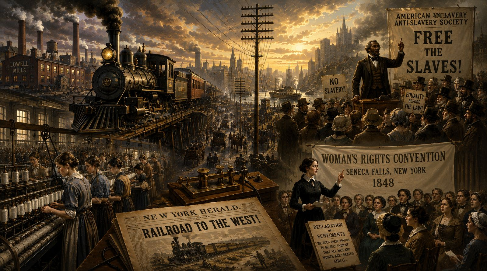
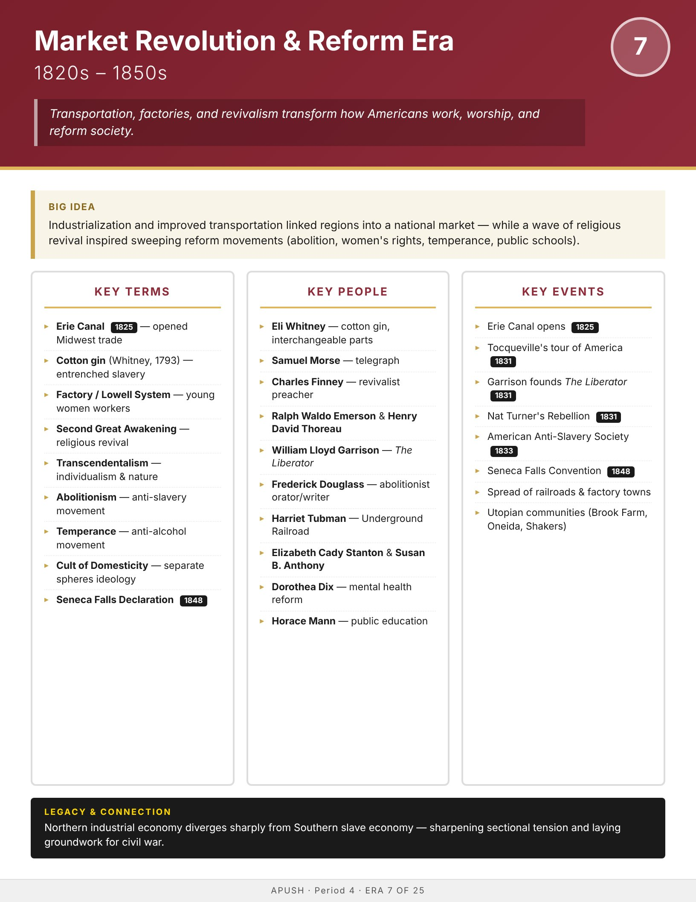

Era
Wise
AP History
AP United States History
Home
Course Sequence
Eras
Exam Prep
DBQ Guides
← Course Sequence

Era 7 of 25 · AP Period 4 · Lessons 16–17
Market Revolution & Reform
1820s–1850s
Open infographic full size
Print

← ERA 6
Jacksonian Era
ALL ERAS
Eras index
ERA 8 →
Westward Expansion & Manifest Destiny